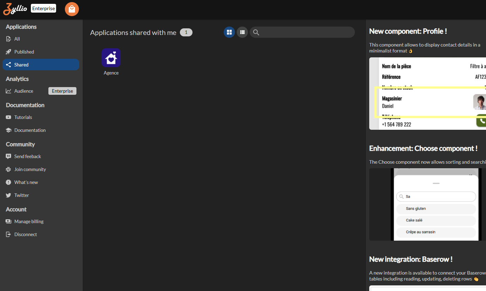

Transfer an application
This page presents the different steps to follow to transfer an application. You will find practical information and advice to make the handoff easier, ensure project continuity, and guarantee the satisfaction of everyone involved.
Access the Zyllio Studio
Access the Zyllio Studio through this link: https://www.zyllio.one

Sign in with your Google account to display the Zyllio dashboard below

Subscribe to the Enterprise plan
Click the button located in the top left corner

Select the Enterprise subscription

Proceed with the payment; navigation returns automatically to your Zyllio dashboard with your subscription immediately activated
Transfer an application
Access your shared applications from the Shared menu as follows:

Click the application menu, then Clone

Congratulations, your application is now available in your account. Return to the All menu to access your applications

When you clone your application, you get an independent copy that belongs exclusively to you and is not accessible to any other user unless you choose to share it
Support
Do not hesitate to contact us